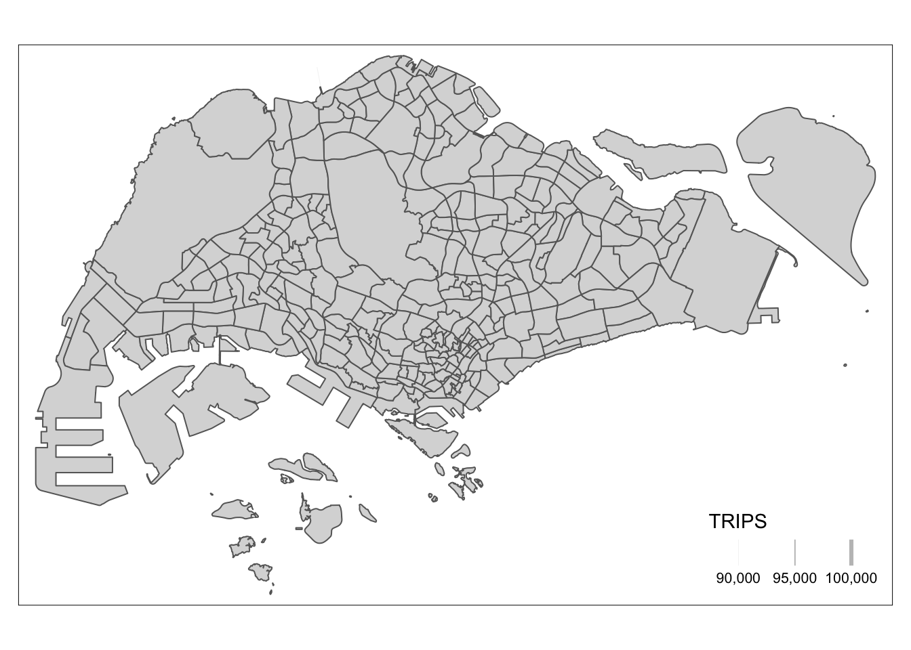
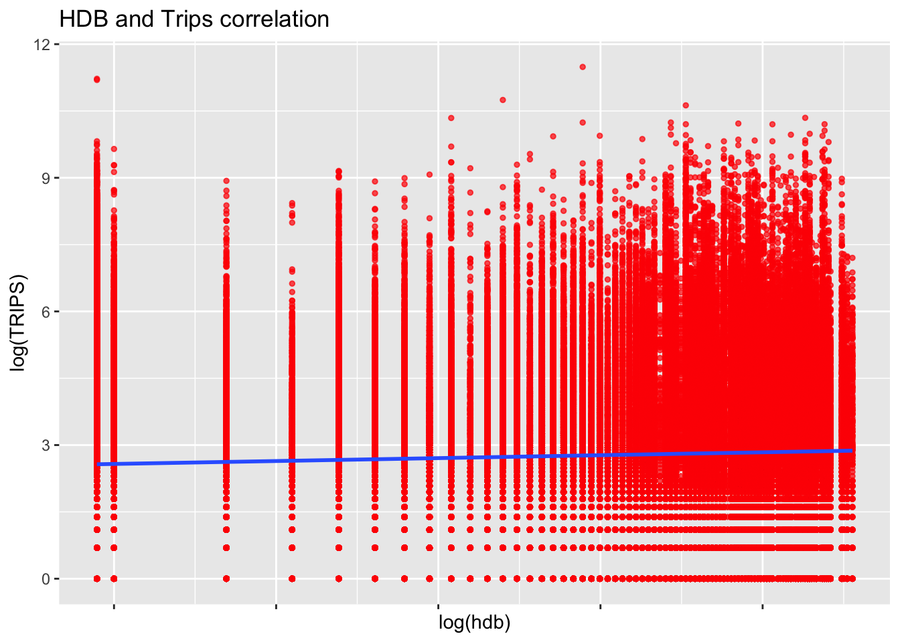

pacman::p_load(tmap, sf, sp, DT, stplanr,
performance, reshape2,
ggpubr, tidyverse, httr, dplyr, gridExtra)Take Home Exercise 2
Geospatial Data Science
Project Summary
This project aims to show an example of how disparate data sources can be integrated, analysed, and modelled to support policy making decision.
In line with the nature of this course, it will be Geospatial data science and analysis (GDSA) centric by using openly available data such as Instituitional Property Information & Commercial listings with SG’s public bus commuter flows to determine urban mobility patterns.
Getting Started
sf - importing, integrating, processing and transforming geospatial data.
tidyverse & reshape2 - importing, integrating, wrangling and visualising data.
tmap - creating thematic maps.
performance & ggpubr - for doing spatial interaction modeling
Preparing the Flow Data
Importing the aspatial data
We will proceed to import the Passenger Volume by Origin Destination Bus Stops October data set downloaded from LTA DataMall.
odbus <- read_csv("data/aspatial/origin_destination_bus_202310.csv")
# removing duplicated line items
odbus <- distinct(odbus)
# double checking data is imported successfully
glimpse(odbus)Rows: 5,694,297
Columns: 7
$ YEAR_MONTH <chr> "2023-10", "2023-10", "2023-10", "2023-10", "2023-…
$ DAY_TYPE <chr> "WEEKENDS/HOLIDAY", "WEEKDAY", "WEEKENDS/HOLIDAY",…
$ TIME_PER_HOUR <dbl> 16, 16, 14, 14, 17, 17, 17, 7, 14, 14, 10, 20, 20,…
$ PT_TYPE <chr> "BUS", "BUS", "BUS", "BUS", "BUS", "BUS", "BUS", "…
$ ORIGIN_PT_CODE <chr> "04168", "04168", "80119", "80119", "44069", "2028…
$ DESTINATION_PT_CODE <chr> "10051", "10051", "90079", "90079", "17229", "2014…
$ TOTAL_TRIPS <dbl> 3, 5, 3, 5, 4, 1, 24, 2, 1, 7, 3, 2, 5, 1, 1, 1, 1…str(odbus)tibble [5,694,297 × 7] (S3: tbl_df/tbl/data.frame)
$ YEAR_MONTH : chr [1:5694297] "2023-10" "2023-10" "2023-10" "2023-10" ...
$ DAY_TYPE : chr [1:5694297] "WEEKENDS/HOLIDAY" "WEEKDAY" "WEEKENDS/HOLIDAY" "WEEKDAY" ...
$ TIME_PER_HOUR : num [1:5694297] 16 16 14 14 17 17 17 7 14 14 ...
$ PT_TYPE : chr [1:5694297] "BUS" "BUS" "BUS" "BUS" ...
$ ORIGIN_PT_CODE : chr [1:5694297] "04168" "04168" "80119" "80119" ...
$ DESTINATION_PT_CODE: chr [1:5694297] "10051" "10051" "90079" "90079" ...
$ TOTAL_TRIPS : num [1:5694297] 3 5 3 5 4 1 24 2 1 7 ...
Tip with Title
Given ORIGIN_PT_CODE and DESTINATION_PT_CODE columns are character data type, we will need to convert them to factors
odbus$ORIGIN_PT_CODE <-
as.factor(odbus$ORIGIN_PT_CODE)
odbus$DESTINATION_PT_CODE <-
as.factor(odbus$DESTINATION_PT_CODE)Filtering data
Next, we will filter out trips that occurs on “Weekday” and “6-9am”
wdmp <- odbus %>%
filter(DAY_TYPE == "WEEKDAY") %>%
filter(TIME_PER_HOUR >= 6 & TIME_PER_HOUR <= 9) %>%
group_by(ORIGIN_PT_CODE, DESTINATION_PT_CODE) %>%
summarise(TRIPS = sum(TOTAL_TRIPS))
head(wdmp)# A tibble: 6 × 3
# Groups: ORIGIN_PT_CODE [1]
ORIGIN_PT_CODE DESTINATION_PT_CODE TRIPS
<fct> <fct> <dbl>
1 01012 01112 290
2 01012 01113 118
3 01012 01121 77
4 01012 01211 118
5 01012 01311 165
6 01012 07371 14From wdmp, we see a total of 242208 observations. Next we will proceed to write wdmp into rds format before importing
write_rds(wdmp, "data/rds/wdmp.rds") wdmp <- read_rds("data/rds/wdmp.rds") Geospatial Data
We will be using 2 sets of geospatial data for this exercise
- BusStop Location from LTA Data Mall
- 2019 URA Master Plan
Importing Bus Stop Locations
First we will import the BusStop locations
busstop <- st_read(dsn = "data/geospatial",
layer = "BusStop") %>%
st_transform(crs = 3414)Reading layer `BusStop' from data source
`/Users/youting/ytquek/ISSS624/Project/data/geospatial' using driver `ESRI Shapefile'
Simple feature collection with 5161 features and 3 fields
Geometry type: POINT
Dimension: XY
Bounding box: xmin: 3970.122 ymin: 26482.1 xmax: 48284.56 ymax: 52983.82
Projected CRS: SVY21glimpse(busstop)Rows: 5,161
Columns: 4
$ BUS_STOP_N <chr> "22069", "32071", "44331", "96081", "11561", "66191", "2338…
$ BUS_ROOF_N <chr> "B06", "B23", "B01", "B05", "B05", "B03", "B02A", "B02", "B…
$ LOC_DESC <chr> "OPP CEVA LOGISTICS", "AFT TRACK 13", "BLK 239", "GRACE IND…
$ geometry <POINT [m]> POINT (13576.31 32883.65), POINT (13228.59 44206.38),…Next we will use the following code chunk to check for duplicates
duplicates <- busstop %>%
st_set_geometry(NULL) %>%
group_by(BUS_STOP_N,
BUS_ROOF_N
) %>%
# count each instance of busstop appearance by the column bus_stop_n and bus_roof_n
summarise(
count = n()
) %>%
ungroup() %>%
# retrieve bustops with more than single instance
filter(count > 1)
glimpse(duplicates)Rows: 7
Columns: 3
$ BUS_STOP_N <chr> "22501", "43709", "51071", "58031", "62251", "82221", "9707…
$ BUS_ROOF_N <chr> "B02", "B06", "B21", "UNK", "B03", "B01", "B14"
$ count <int> 2, 2, 2, 2, 2, 2, 2In total, 7 bus stops were found to have duplicates. It is unclear why this is the case, based on the student’s external research using Google Maps, no distinct or unique properties of the bus stops were found. They were neither interchanges nor a single bus stop serving a loop.
We will proceed to use the dplyr package to remove the first instance of duplicates from the busstop tibble data.
cleaned_busstop <- busstop %>% distinct(BUS_STOP_N,
BUS_ROOF_N, .keep_all = TRUE)
class(cleaned_busstop)[1] "sf" "data.frame"sf::st_geometry(cleaned_busstop)Geometry set for 5154 features
Geometry type: POINT
Dimension: XY
Bounding box: xmin: 3970.122 ymin: 26482.1 xmax: 48284.56 ymax: 52983.82
Projected CRS: SVY21 / Singapore TM
First 5 geometries:Double checking the cleaned_busstop data frame no longer have duplicates
duplicates1 <- cleaned_busstop %>%
st_set_geometry(NULL) %>%
group_by(BUS_STOP_N,
BUS_ROOF_N
) %>%
# count each instance of busstop appearance by the column bus_stop_n and bus_roof_n
summarise(
count = n()
) %>%
ungroup() %>%
# retrieve bustops with more than single instance
filter(count > 1)
glimpse(duplicates1)Rows: 0
Columns: 3
$ BUS_STOP_N <chr>
$ BUS_ROOF_N <chr>
$ count <int> Importing Whole of SG Map
Next we will import the MPSZ-2019 layer which is representative of Singapore
mpsz <- read_rds("data/rds/mpsz.rds")
mpszSimple feature collection with 332 features and 6 fields
Geometry type: MULTIPOLYGON
Dimension: XY
Bounding box: xmin: 2667.538 ymin: 15748.72 xmax: 56396.44 ymax: 50256.33
Projected CRS: SVY21 / Singapore TM
First 10 features:
SUBZONE_N SUBZONE_C PLN_AREA_N PLN_AREA_C REGION_N
1 MARINA EAST MESZ01 MARINA EAST ME CENTRAL REGION
2 INSTITUTION HILL RVSZ05 RIVER VALLEY RV CENTRAL REGION
3 ROBERTSON QUAY SRSZ01 SINGAPORE RIVER SR CENTRAL REGION
4 JURONG ISLAND AND BUKOM WISZ01 WESTERN ISLANDS WI WEST REGION
5 FORT CANNING MUSZ02 MUSEUM MU CENTRAL REGION
6 MARINA EAST (MP) MPSZ05 MARINE PARADE MP CENTRAL REGION
7 SUDONG WISZ03 WESTERN ISLANDS WI WEST REGION
8 SEMAKAU WISZ02 WESTERN ISLANDS WI WEST REGION
9 SOUTHERN GROUP SISZ02 SOUTHERN ISLANDS SI CENTRAL REGION
10 SENTOSA SISZ01 SOUTHERN ISLANDS SI CENTRAL REGION
REGION_C geometry
1 CR MULTIPOLYGON (((33222.98 29...
2 CR MULTIPOLYGON (((28481.45 30...
3 CR MULTIPOLYGON (((28087.34 30...
4 WR MULTIPOLYGON (((14557.7 304...
5 CR MULTIPOLYGON (((29542.53 31...
6 CR MULTIPOLYGON (((35279.55 30...
7 WR MULTIPOLYGON (((15772.59 21...
8 WR MULTIPOLYGON (((19843.41 21...
9 CR MULTIPOLYGON (((30870.53 22...
10 CR MULTIPOLYGON (((26879.04 26...Setting up Hexagon Grid
The following code chunks create a hexagonal grid frame which spans a total of 750m from edge to edge for each hexagon to represent the traffic analysis zone (TAZ).
Step 1. Drawing the Hexagon Grid
Drawing a hexagon grid over mpsz
hexagon_grid = st_make_grid(mpsz, c(750, 750), what = "polygons", square = FALSE)Next we will add a grid_id column to the hexagon grid before assigning the bus stops to it
grid_sf = st_sf(hexagon_grid) %>%
mutate(grid_id = 1:length(lengths(hexagon_grid)))busstop_grid <- st_intersection(grid_sf,cleaned_busstop) %>%
select(BUS_STOP_N, grid_id) %>%
st_drop_geometry()Step 2. Preparing origin to destination data
Preparing origin trip id
We will do a left join using our wdmp dataframe with busstop grid using ORIGIN_PT_CODE
wdmp <- wdmp %>%
left_join(busstop_grid, by = c("ORIGIN_PT_CODE" = "BUS_STOP_N")) %>%
rename(ori_grid = grid_id) %>%
distinct()Preparing destination trip id
We will do a left join using our wdmp dataframe with busstop grid using DESTINATION_PT_CODE
wdmp <- wdmp %>%
left_join(busstop_grid, by = c("DESTINATION_PT_CODE" = "BUS_STOP_N")) %>%
rename(dest_grid = grid_id) %>%
distinct()To avoid cluttering our wdmp frame, we will remove the unused columns
wdmp <- na.omit(wdmp) wdmp <- wdmp %>%
ungroup() %>%
select(-c(ORIGIN_PT_CODE, DESTINATION_PT_CODE)) To avoid any issues later on for plotting flow line with grid_sf, we will need to re-order the table to promote original grid id column first.
wdmp <- wdmp %>%
select(ori_grid, dest_grid, TRIPS)Visualising Spatial Interaction
The following steps are taken to visualise the traffic flows between TAZs.
Removing intra-zonal flows
wdmp_inter <- wdmp[wdmp$ori_grid != wdmp$dest_grid, ]Creating desire lines
Desire lines are straight lines which indicates the linear movement from origin to destination. We will use the od2line() function to create it.
# Check for non-matching IDs
wdmp_inter$ori_grid[!wdmp_inter$ori_grid %in% grid_sf$grid_id]integer(0)# Check column types
str(wdmp_inter)tibble [232,305 × 3] (S3: tbl_df/tbl/data.frame)
$ ori_grid : int [1:232305] 2010 2010 2010 2010 2010 2010 2010 2010 2010 2010 ...
$ dest_grid: int [1:232305] 2038 2038 2065 2065 2119 2093 2093 2120 2148 2148 ...
$ TRIPS : num [1:232305] 290 118 77 118 165 14 30 16 35 26 ...str(grid_sf)Classes 'sf' and 'data.frame': 3942 obs. of 2 variables:
$ hexagon_grid:sfc_POLYGON of length 3942; first list element: List of 1
..$ : num [1:7, 1:2] 2293 1918 1918 2293 2668 ...
.. ..- attr(*, "dimnames")=List of 2
.. .. ..$ : NULL
.. .. ..$ : chr [1:2] "y" "x"
..- attr(*, "class")= chr [1:3] "XY" "POLYGON" "sfg"
$ grid_id : int 1 2 3 4 5 6 7 8 9 10 ...
- attr(*, "sf_column")= chr "hexagon_grid"
- attr(*, "agr")= Factor w/ 3 levels "constant","aggregate",..: NA
..- attr(*, "names")= chr "grid_id"#Check for NA fields
sum(is.na(wdmp_inter$ori_grid))[1] 0sum(is.na(wdmp_inter$dest_grid))[1] 0flowLine <- od2line(flow = wdmp_inter,
zones = grid_sf,
zone_code = "grid_id")Using the quantile() function, we observe that between 75% to 100%, the data is obviously very skewed and in turn will affect visualisations later on.
quantile(flowLine$TRIPS) 0% 25% 50% 75% 100%
1 3 15 56 97600 Visualising the desire lines
Given that the flow data will be very messy if we were to plot everything in a go, we will opt to plot different desire lines based on the quantiles we observed.
When flow is >= 5000
tm_shape(mpsz) +
tm_polygons() +
flowLine %>%
filter(TRIPS >= 5000) %>%
tm_shape() +
tm_lines(lwd = "TRIPS",
style = "quantile",
scale = c(0.1, 1, 3, 5, 7, 10),
n = 6,
alpha = 0.3)When flow is >= 50000
tm_shape(mpsz) +
tm_polygons() +
flowLine %>%
filter(TRIPS >= 50000) %>%
tm_shape() +
tm_lines(lwd = "TRIPS",
style = "quantile",
scale = c(0.1, 1, 3, 5, 7, 10),
n = 6,
alpha = 0.3)
When flow is >= 90000
tm_shape(mpsz) +
tm_polygons() +
flowLine %>%
filter(TRIPS >= 90000) %>%
tm_shape() +
tm_lines(lwd = "TRIPS",
style = "quantile",
scale = c(0.1, 1, 3, 5, 7, 10),
n = 6,
alpha = 0.3)
To see the top 20 most taken trips, we shall use the following code chunk
# Join wdmp_inter with busstop_grid to get the bus_stop_n for ori_grid
wdmp_inter_with_stop_n <- wdmp_inter %>%
left_join(busstop_grid, by = c("ori_grid" = "grid_id"))
# Join with bustop to get the loc_desc for the bus_stop_n
wdmp_inter_with_loc_desc <- wdmp_inter_with_stop_n %>%
left_join(busstop, by = "BUS_STOP_N")
# Now select the top 10 trips with loc_desc
top_trips <- wdmp_inter_with_loc_desc %>%
arrange(desc(TRIPS)) %>%
slice_head(n = 20)
head(top_trips)# A tibble: 6 × 7
ori_grid dest_grid TRIPS BUS_STOP_N BUS_ROOF_N LOC_DESC
<int> <int> <dbl> <chr> <chr> <chr>
1 1350 1375 97600 46211 NIL JOHOR BAHRU CHECKPT
2 1350 1375 97600 46219 NIL JOHOR BAHRU CHECKPT
3 1375 1319 74796 46159 B07 BLK 206
4 1375 1319 74796 46109 B05 W'LANDS CHECKPT
5 1375 1319 74796 46101 B45 W'LANDS CHECKPT
6 1375 1319 74796 46151 B08 BLK 212
# ℹ 1 more variable: geometry <POINT [m]>Summary
From the table, we can derive that the highest volume of trips are congregating around the causeway from Bus Stop number 46211 Bus Stop 46219. Both of which have identifical number of trips but however does not have a Bus Roof Number.
The next
Understanding commuter patterns
Propulsive and Attractiveness Variables
The factors listed above are computed at TAZ level for Spatial Interaction Modelling.
Effect of Distance on Number of Trips
The analysis of distance on numbers of trips will require us to computer a distance matrix by using grid_sf and converting it from sf tibble data frame to an sp object
grid_sp <- as(grid_sf, "Spatial")
grid_spclass : SpatialPolygonsDataFrame
features : 3942
extent : 1917.538, 57042.54, 15315.71, 50606.24 (xmin, xmax, ymin, ymax)
crs : +proj=tmerc +lat_0=1.36666666666667 +lon_0=103.833333333333 +k=1 +x_0=28001.642 +y_0=38744.572 +ellps=WGS84 +towgs84=0,0,0,0,0,0,0 +units=m +no_defs
variables : 1
names : grid_id
min values : 1
max values : 3942 Calculating the euclidean distance between the centroids of the hexagons
euc_dist <- spDists(grid_sp,
longlat = FALSE)
head(euc_dist, n=c(10, 10)) [,1] [,2] [,3] [,4] [,5] [,6] [,7] [,8]
[1,] 0.000 1299.038 2598.076 3897.114 5196.152 6495.191 7794.229 9093.267
[2,] 1299.038 0.000 1299.038 2598.076 3897.114 5196.152 6495.191 7794.229
[3,] 2598.076 1299.038 0.000 1299.038 2598.076 3897.114 5196.152 6495.191
[4,] 3897.114 2598.076 1299.038 0.000 1299.038 2598.076 3897.114 5196.152
[5,] 5196.152 3897.114 2598.076 1299.038 0.000 1299.038 2598.076 3897.114
[6,] 6495.191 5196.152 3897.114 2598.076 1299.038 0.000 1299.038 2598.076
[7,] 7794.229 6495.191 5196.152 3897.114 2598.076 1299.038 0.000 1299.038
[8,] 9093.267 7794.229 6495.191 5196.152 3897.114 2598.076 1299.038 0.000
[9,] 10392.305 9093.267 7794.229 6495.191 5196.152 3897.114 2598.076 1299.038
[10,] 11691.343 10392.305 9093.267 7794.229 6495.191 5196.152 3897.114 2598.076
[,9] [,10]
[1,] 10392.305 11691.343
[2,] 9093.267 10392.305
[3,] 7794.229 9093.267
[4,] 6495.191 7794.229
[5,] 5196.152 6495.191
[6,] 3897.114 5196.152
[7,] 2598.076 3897.114
[8,] 1299.038 2598.076
[9,] 0.000 1299.038
[10,] 1299.038 0.000Labelling column and row headers of distance matrix
Create a list sorted according to the the distance matrix by hexagon grid id
grid_id <- grid_sf$grid_id
# Attach `grid_id` to row and column for distance matrix matching
colnames(euc_dist) <- paste0(grid_id)
rownames(euc_dist) <- paste0(grid_id)Finding each Origin to Destination distance
dist_pair <- melt(euc_dist) %>%
rename(ori_grid = Var1,
dest_grid = Var2,
distance = value)
head(dist_pair, 10) ori_grid dest_grid distance
1 1 1 0.000
2 2 1 1299.038
3 3 1 2598.076
4 4 1 3897.114
5 5 1 5196.152
6 6 1 6495.191
7 7 1 7794.229
8 8 1 9093.267
9 9 1 10392.305
10 10 1 11691.343Find the mininum inter-zonal difference
We will refuse any distance which is 0 as that is not helpful in helping find the miniumum distance
dist_pair %>%
filter(distance > 0) %>%
summary() ori_grid dest_grid distance
Min. : 1 Min. : 1 Min. : 750
1st Qu.: 986 1st Qu.: 986 1st Qu.:14465
Median :1972 Median :1972 Median :22761
Mean :1972 Mean :1972 Mean :23714
3rd Qu.:2957 3rd Qu.:2957 3rd Qu.:31882
Max. :3942 Max. :3942 Max. :64356 Summary
The smallest observed distance inter-zonal difference is 750m, which is exactly the distance between the centres of two adjacent hexagons. To resolve this, we can set the intra-zonal distance to 100 instead.
dist_pair$distance <- ifelse(dist_pair$distance == 0,
100, dist_pair$distance)
summary(dist_pair) ori_grid dest_grid distance
Min. : 1 Min. : 1 Min. : 100
1st Qu.: 986 1st Qu.: 986 1st Qu.:14465
Median :1972 Median :1972 Median :22761
Mean :1972 Mean :1972 Mean :23708
3rd Qu.:2957 3rd Qu.:2957 3rd Qu.:31882
Max. :3942 Max. :3942 Max. :64356 Converting ori_grid and desti_grid columns to factors data types
dist_pair$ori_grid <-
as.factor(dist_pair$ori_grid)
dist_pair$dest_grid <-
as.factor(dist_pair$dest_grid)Finding how no. of trips relate to distance
Compute the Total Passenger Trips
flow_data <- wdmp %>%
group_by(ori_grid, dest_grid) %>%
summarize(TRIPS = sum(TRIPS)) Separating intra-flow (within hexagon) from passenger volume df
flow_data$FlowNoIntra <- ifelse(
flow_data$ori_grid == flow_data$dest_grid,
0, flow_data$TRIPS)
flow_data$offset <- ifelse(
flow_data$ori_grid == flow_data$dest_grid,
0.000001, 1)Converting ori_grid and desti_grid columns to factors data type
flow_data$ori_grid <-
as.factor(flow_data$ori_grid)
flow_data$dest_grid <-
as.factor(flow_data$dest_grid)Combining passenger volume data with inter-zonal distance value
flow_data <- flow_data %>%
left_join (dist_pair,
by = c("ori_grid" = "ori_grid",
"dest_grid" = "dest_grid"))Visualising Plot
p1 <- flow_data %>%
st_drop_geometry() %>%
ggplot(
aes(
x = distance,
y = TRIPS)) +
geom_point(
size = 1,
alpha = .6,
color = "lightblue") +
geom_smooth(method = lm) +
ggtitle("Trips to distance")
logp1 <- flow_data %>%
st_drop_geometry() %>%
ggplot(
aes(x = log(distance),
y = log(TRIPS))) +
geom_point(
size = 1,
alpha = .6,
color = "lightgreen") +
geom_smooth(method = lm) +
ggtitle("Log of Trips to distance")
#Using gridExtra Package to show both graphs)
grid.arrange(p1, logp1, ncol = 2)
Observation
A strong inverse linear trend is observed for trips when the distance is further for the log transformed data. Wheareas in the initial data, a trend is not immediately obvious although there is a slight inverse trendline observable as well.
Propulsive Attributes
This refers to a strong factor that encourage a “push” for people to get away from their current location. Given the time period being analysed is Weekday Morning Peak, propulsive attributes are likely related to the following places of interest
- Train Station Exits - Part of commute between residence & work/school
- HDB - Residences/Homes
Importing of Train Station Exit Locations
mrt_exit <- st_read(dsn = "data/geospatial",
layer = "Train_Station_Exit_Layer") %>%
st_transform(crs = 3414)Reading layer `Train_Station_Exit_Layer' from data source
`/Users/youting/ytquek/ISSS624/Project/data/geospatial' using driver `ESRI Shapefile'
Simple feature collection with 565 features and 2 fields
Geometry type: POINT
Dimension: XY
Bounding box: xmin: 6134.086 ymin: 27499.7 xmax: 45356.36 ymax: 47865.92
Projected CRS: SVY21Number of Train Station Exits per Location
grid_attr <- grid_sf %>%
mutate(mrt_exit_count = lengths(st_intersects(., mrt_exit)))
summary(grid_attr$mrt_exit) Min. 1st Qu. Median Mean 3rd Qu. Max.
0.0000 0.0000 0.0000 0.1433 0.0000 19.0000 Importing of residential HDBs
hdb <- read_csv("data/aspatial/hdb.csv")
hdb <- distinct(hdb)Removing duplicates, select only residential properties and relevant columns
hdb <- hdb %>%
select(
blk_no,
street,
postal,
total_dwelling_units,
lng,
lat
)hdb_sf <- st_as_sf(hdb,
coords = c("lng", "lat"),
crs = 4326) %>%
st_transform(crs = 3414)
grid_attr$hdb <- lengths(st_intersects(grid_sf, hdb_sf))Attractive Attributes
Since the time period being analysed is Weekday Morning Peak, attractive attributes is likely to be:
- Businesses
- School
- Food & Beverages
- Retail Establishments
Importing of Business Locations
biz <- st_read(dsn = "data/geospatial",
layer = "Business") %>%
st_transform(crs = 3414)Reading layer `Business' from data source
`/Users/youting/ytquek/ISSS624/Project/data/geospatial' using driver `ESRI Shapefile'
Simple feature collection with 6550 features and 3 fields
Geometry type: POINT
Dimension: XY
Bounding box: xmin: 3669.148 ymin: 25408.41 xmax: 47034.83 ymax: 50148.54
Projected CRS: SVY21 / Singapore TMgrid_attr$biz <- grid_sf %>%
mutate(biz_no = lengths(st_intersects(., biz)))
summary(grid_attr$biz) hexagon_grid grid_id biz_no
POLYGON :3942 Min. : 1.0 Min. : 0.000
epsg:3414 : 0 1st Qu.: 986.2 1st Qu.: 0.000
+proj=tmer...: 0 Median :1971.5 Median : 0.000
Mean :1971.5 Mean : 1.662
3rd Qu.:2956.8 3rd Qu.: 0.000
Max. :3942.0 Max. :126.000 Importing of FNB locations
fnb <- st_read(dsn = "data/geospatial",
layer = "F&B") %>%
st_transform(crs = 3414)Reading layer `F&B' from data source
`/Users/youting/ytquek/ISSS624/Project/data/geospatial' using driver `ESRI Shapefile'
Simple feature collection with 1919 features and 3 fields
Geometry type: POINT
Dimension: XY
Bounding box: xmin: 6010.495 ymin: 25343.27 xmax: 45462.43 ymax: 48796.21
Projected CRS: SVY21 / Singapore TMgrid_attr$fnb <- grid_sf %>%
mutate(fnb = lengths(st_intersects(., fnb)))
summary(grid_attr$fnb) hexagon_grid grid_id fnb
POLYGON :3942 Min. : 1.0 Min. : 0.0000
epsg:3414 : 0 1st Qu.: 986.2 1st Qu.: 0.0000
+proj=tmer...: 0 Median :1971.5 Median : 0.0000
Mean :1971.5 Mean : 0.4868
3rd Qu.:2956.8 3rd Qu.: 0.0000
Max. :3942.0 Max. :127.0000 Importing of Retail locations
retail <- st_read(dsn = "data/geospatial",
layer = "Retails") %>%
st_transform(crs = 3414)Reading layer `Retails' from data source
`/Users/youting/ytquek/ISSS624/Project/data/geospatial' using driver `ESRI Shapefile'
Simple feature collection with 37635 features and 3 fields
Geometry type: POINT
Dimension: XY
Bounding box: xmin: 4737.982 ymin: 25171.88 xmax: 48265.04 ymax: 50135.28
Projected CRS: SVY21 / Singapore TMgrid_attr$retail <- grid_sf %>%
mutate(retail = lengths(st_intersects(., retail)))
summary(grid_attr$retail) hexagon_grid grid_id retail
POLYGON :3942 Min. : 1.0 Min. : 0.000
epsg:3414 : 0 1st Qu.: 986.2 1st Qu.: 0.000
+proj=tmer...: 0 Median :1971.5 Median : 0.000
Mean :1971.5 Mean : 9.547
3rd Qu.:2956.8 3rd Qu.: 0.000
Max. :3942.0 Max. :1427.000 Importing of Financial Services Locations
fs <- st_read(dsn = "Data/geospatial",
layer = "FinServ") %>%
st_transform(crs = 3414)Reading layer `FinServ' from data source
`/Users/youting/ytquek/ISSS624/Project/data/geospatial' using driver `ESRI Shapefile'
Simple feature collection with 3320 features and 3 fields
Geometry type: POINT
Dimension: XY
Bounding box: xmin: 4881.527 ymin: 25171.88 xmax: 46526.16 ymax: 49338.02
Projected CRS: SVY21 / Singapore TMgrid_attr$fs <- lengths(st_intersects(grid_sf, fs))
summary(grid_attr$fs) Min. 1st Qu. Median Mean 3rd Qu. Max.
0.0000 0.0000 0.0000 0.8422 0.0000 176.0000 Importing of School Locations
sch <- read_csv("data/aspatial/schools.csv")
sch <- unique(sch)
sch <- sch %>%
select(
results.LATITUDE,
results.LONGITUDE,
postal_code,
school_name
)Rename columns for ease of reference
sch <- sch %>%
rename(
latitude = results.LATITUDE,
longitude = results.LONGITUDE
)Converting an aspatial data into a simple features tibble data.frame
sch_sf <- st_as_sf(sch,
coords = c("longitude", "latitude"),
crs = 4326) %>%
st_transform(crs = 3414)Number of Schools per Location
grid_attr$sch <- lengths(st_intersects(grid_sf, sch_sf))
summary(grid_attr$sch) Min. 1st Qu. Median Mean 3rd Qu. Max.
0.00000 0.00000 0.00000 0.08879 0.00000 5.00000 Final data set
summary(grid_attr) hexagon_grid grid_id mrt_exit_count hdb
POLYGON :3942 Min. : 1.0 Min. : 0.0000 Min. : 0.000
epsg:3414 : 0 1st Qu.: 986.2 1st Qu.: 0.0000 1st Qu.: 0.000
+proj=tmer...: 0 Median :1971.5 Median : 0.0000 Median : 0.000
Mean :1971.5 Mean : 0.1433 Mean : 3.156
3rd Qu.:2956.8 3rd Qu.: 0.0000 3rd Qu.: 0.000
Max. :3942.0 Max. :19.0000 Max. :95.000
biz.hexagon_grid biz.grid_id biz.biz_no
POLYGON :3942 Min. : 1.00 Min. : 0.00000
epsg:3414 : 0 1st Qu.: 986.25 1st Qu.: 0.00000
+proj=tmer...: 0 Median :1971.50 Median : 0.00000
NA Mean :1971.50 Mean : 1.66159
NA 3rd Qu.:2956.75 3rd Qu.: 0.00000
NA Max. :3942.00 Max. :126.00000
fnb.hexagon_grid fnb.grid_id fnb.fnb
POLYGON :3942 Min. : 1.00 Min. : 0.00000
epsg:3414 : 0 1st Qu.: 986.25 1st Qu.: 0.00000
+proj=tmer...: 0 Median :1971.50 Median : 0.00000
NA Mean :1971.50 Mean : 0.48681
NA 3rd Qu.:2956.75 3rd Qu.: 0.00000
NA Max. :3942.00 Max. :127.00000
retail.hexagon_grid retail.grid_id retail.retail
POLYGON :3942 Min. : 1.00 Min. : 0.0000
epsg:3414 : 0 1st Qu.: 986.25 1st Qu.: 0.0000
+proj=tmer...: 0 Median :1971.50 Median : 0.0000
NA Mean :1971.50 Mean : 9.5472
NA 3rd Qu.:2956.75 3rd Qu.: 0.0000
NA Max. :3942.00 Max. :1427.0000
fs sch
Min. : 0.0000 Min. :0.00000
1st Qu.: 0.0000 1st Qu.:0.00000
Median : 0.0000 Median :0.00000
Mean : 0.8422 Mean :0.08879
3rd Qu.: 0.0000 3rd Qu.:0.00000
Max. :176.0000 Max. :5.00000 #Spatial Interaction Modelling
Spatial Interaction Modeling will be used to predict the flow of people & information between locations in the hexagonal grid. The models are based on the premise of the amount of interaction between two locations decreases as the distance between them increases, following a function known as a distance decay function
Finding Propulsive Attributes flow by their respective attributes
Flow by origin
# Origin
attr_all <- grid_attr %>%
st_drop_geometry() %>%
mutate(
grid_id = as.factor(grid_id)
)attr_flow <- dist_pair %>%
mutate(
ori_grid = as.factor(ori_grid),
dest_grid= as.factor(dest_grid)
) %>%
left_join(
attr_all,
by = c("ori_grid" = "grid_id")) %>%
rename(
ori_mrt_exit = mrt_exit_count,
ori_fnb = fnb,
ori_hdb = hdb,
) %>%
select(
-c(fs,biz,sch))wdmp <- wdmp %>%
mutate(ori_grid = as.factor(ori_grid),
dest_grid = as.factor(dest_grid))
attr_flow <- left_join(attr_flow, wdmp, by = c("ori_grid", "dest_grid"))Flow by Destination
Retain only attractive attributes
attr_flow <- attr_flow %>%
left_join(
attr_all,
by = c("dest_grid" = "grid_id")) %>%
rename(
dest_fs = fs,
dest_biz = biz,
dest_sch = sch,
) %>%
select(
-c(mrt_exit_count,ori_fnb,ori_hdb)
)
summary(attr_flow) ori_grid dest_grid distance ori_mrt_exit
1990 : 5278 2010 : 5762 Min. : 100 Min. : 0.0000
2314 : 5172 2038 : 5578 1st Qu.:14250 1st Qu.: 0.0000
2038 : 5142 1849 : 5222 Median :22537 Median : 0.0000
1123 : 5137 1984 : 5190 Mean :23496 Mean : 0.1578
2177 : 5077 1983 : 5121 3rd Qu.:31749 3rd Qu.: 0.0000
1987 : 5044 1990 : 5086 Max. :64356 Max. :19.0000
(Other):15680658 (Other):15679549
retail.x.hexagon_grid retail.x.grid_id retail.x.retail
POLYGON :15711508 Min. : 1.000 Min. : 0.0000
epsg:3414 : 0 1st Qu.: 995.000 1st Qu.: 0.0000
+proj=tmer...: 0 Median :1973.000 Median : 0.0000
NA Mean :1971.299 Mean : 10.6084
NA 3rd Qu.:2947.000 3rd Qu.: 0.0000
NA Max. :3942.000 Max. :1427.0000
TRIPS hdb
Min. : 1 Min. : 0.000
1st Qu.: 3 1st Qu.: 0.000
Median : 15 Median : 0.000
Mean : 107 Mean : 3.387
3rd Qu.: 57 3rd Qu.: 0.000
Max. :97600 Max. :95.000
NA's :15473533
dest_biz.hexagon_grid dest_biz.grid_id dest_biz.biz_no
POLYGON :15711508 Min. : 1.000 Min. : 0.00000
epsg:3414 : 0 1st Qu.: 995.000 1st Qu.: 0.00000
+proj=tmer...: 0 Median :1972.000 Median : 0.00000
NA Mean :1971.241 Mean : 1.72968
NA 3rd Qu.:2947.000 3rd Qu.: 0.00000
NA Max. :3942.000 Max. :126.00000
fnb.hexagon_grid fnb.grid_id fnb.fnb
POLYGON :15711508 Min. : 1.000 Min. : 0.00000
epsg:3414 : 0 1st Qu.: 995.000 1st Qu.: 0.00000
+proj=tmer...: 0 Median :1972.000 Median : 0.00000
NA Mean :1971.241 Mean : 0.56655
NA 3rd Qu.:2947.000 3rd Qu.: 0.00000
NA Max. :3942.000 Max. :127.00000
retail.y.hexagon_grid retail.y.grid_id retail.y.retail
POLYGON :15711508 Min. : 1.000 Min. : 0.000
epsg:3414 : 0 1st Qu.: 995.000 1st Qu.: 0.000
+proj=tmer...: 0 Median :1972.000 Median : 0.000
NA Mean :1971.241 Mean : 10.794
NA 3rd Qu.:2947.000 3rd Qu.: 0.000
NA Max. :3942.000 Max. :1427.000
dest_fs dest_sch
Min. : 0.0000 Min. :0.00000
1st Qu.: 0.0000 1st Qu.:0.00000
Median : 0.0000 Median :0.00000
Mean : 0.9568 Mean :0.09478
3rd Qu.: 0.0000 3rd Qu.:0.00000
Max. :176.0000 Max. :5.00000
Replacing 0 values
update_cols <- c( "dest_fs", "hdb", "dest_sch", "ori_mrt_exit")
# changing all 0 values to 0.99
attr_flow <- attr_flow %>%
mutate(across(all_of(update_cols), ~ ifelse(. == 0, 0.9, .)))
summary(attr_flow) ori_grid dest_grid distance ori_mrt_exit
1990 : 5278 2010 : 5762 Min. : 100 Min. : 0.900
2314 : 5172 2038 : 5578 1st Qu.:14250 1st Qu.: 0.900
2038 : 5142 1849 : 5222 Median :22537 Median : 0.900
1123 : 5137 1984 : 5190 Mean :23496 Mean : 1.009
2177 : 5077 1983 : 5121 3rd Qu.:31749 3rd Qu.: 0.900
1987 : 5044 1990 : 5086 Max. :64356 Max. :19.000
(Other):15680658 (Other):15679549
retail.x.hexagon_grid retail.x.grid_id retail.x.retail
POLYGON :15711508 Min. : 1.000 Min. : 0.0000
epsg:3414 : 0 1st Qu.: 995.000 1st Qu.: 0.0000
+proj=tmer...: 0 Median :1973.000 Median : 0.0000
NA Mean :1971.299 Mean : 10.6084
NA 3rd Qu.:2947.000 3rd Qu.: 0.0000
NA Max. :3942.000 Max. :1427.0000
TRIPS hdb
Min. : 1 Min. : 0.90
1st Qu.: 3 1st Qu.: 0.90
Median : 15 Median : 0.90
Mean : 107 Mean : 4.19
3rd Qu.: 57 3rd Qu.: 0.90
Max. :97600 Max. :95.00
NA's :15473533
dest_biz.hexagon_grid dest_biz.grid_id dest_biz.biz_no
POLYGON :15711508 Min. : 1.000 Min. : 0.00000
epsg:3414 : 0 1st Qu.: 995.000 1st Qu.: 0.00000
+proj=tmer...: 0 Median :1972.000 Median : 0.00000
NA Mean :1971.241 Mean : 1.72968
NA 3rd Qu.:2947.000 3rd Qu.: 0.00000
NA Max. :3942.000 Max. :126.00000
fnb.hexagon_grid fnb.grid_id fnb.fnb
POLYGON :15711508 Min. : 1.000 Min. : 0.00000
epsg:3414 : 0 1st Qu.: 995.000 1st Qu.: 0.00000
+proj=tmer...: 0 Median :1972.000 Median : 0.00000
NA Mean :1971.241 Mean : 0.56655
NA 3rd Qu.:2947.000 3rd Qu.: 0.00000
NA Max. :3942.000 Max. :127.00000
retail.y.hexagon_grid retail.y.grid_id retail.y.retail
POLYGON :15711508 Min. : 1.000 Min. : 0.000
epsg:3414 : 0 1st Qu.: 995.000 1st Qu.: 0.000
+proj=tmer...: 0 Median :1972.000 Median : 0.000
NA Mean :1971.241 Mean : 10.794
NA 3rd Qu.:2947.000 3rd Qu.: 0.000
NA Max. :3942.000 Max. :1427.000
dest_fs dest_sch
Min. : 0.90 Min. :0.9000
1st Qu.: 0.90 1st Qu.:0.9000
Median : 0.90 Median :0.9000
Mean : 1.75 Mean :0.9357
3rd Qu.: 0.90 3rd Qu.:0.9000
Max. :176.00 Max. :5.0000
Visualising correlation between propulsive factors and trips
HDB and Trips Correlation
p_hdb <- attr_flow %>%
st_drop_geometry() %>%
ggplot(
aes(x = log(hdb),
y = log(TRIPS))
) +
geom_point(
color = "red",
size = 1,
alpha = .7
) +
geom_smooth(method = lm) +
theme(axis.text.x = element_blank()) +
ggtitle("HDB and Trips correlation ")
p_hdb
MRT and Trips Correlation
p_mrt <- attr_flow %>%
st_drop_geometry() %>%
ggplot(
aes(x = log(ori_mrt_exit),
y = log(TRIPS))
) +
geom_point(
color = "green",
size = 1,
alpha = .7
) +
geom_smooth(method = lm) +
theme(axis.text.x = element_blank()) +
ggtitle("MRT exit and Trips correlation ")
p_mrtVisualising correlation between attractive factors and trips
Financial Services and Trips Correlation
p_fs <- attr_flow %>%
st_drop_geometry() %>%
ggplot(
aes(x = log(dest_fs),
y = log(TRIPS))
) +
geom_point(
color = "blue",
size = 1,
alpha = .7
) +
geom_smooth(method = lm) +
theme(axis.text.x = element_blank()) +
ggtitle("Financial Services and Trips correlation ")
p_fsSchools and Trips Correlation
p_sch <- attr_flow %>%
st_drop_geometry() %>%
ggplot(
aes(x = log(dest_sch),
y = log(TRIPS))
) +
geom_point(
color = "orange",
size = 1,
alpha = .7
) +
geom_smooth(method = lm) +
theme(axis.text.x = element_blank()) +
ggtitle("Financial Services and Trips correlation ")
p_schThe Scatterplots above reveal that there seems to be a positive correlation between:
- Number of schools and number of trips
- Number of financial services and number of trips
- Numbers of HDB houses and number of trips while MRT exits doesnt seem to have a noticeable trend.